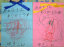
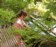
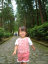
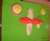

2001年6月17日撮影
右：先月由起子からもらったママへのプレゼント。
左：父の日のために持って帰ってきたのに「ママにあげるのぉー」
という言葉に、パパはガックリ・・・。
2001年6月16日 12時36分撮影
風情のある手洗いスペース。
由起子は行く先々で「お手々洗う〜」と、柄杓を持ちたがります。2001年6月16日 12時31分撮影
毘沙門堂は拝観料が必要。襖絵や天井絵・お庭見学に加えて、
住職さんのお話もあり、充分満足できました。
2001年6月16日 10時13分撮影
京都山科への歴史ハイキングに参加。天智天皇陵にて。
この石畳がなんとも風情があって良かったです。2001年6月9日 11時30分撮影
殺風景な公園に花壇が完成しました。お花が綺麗です。2001年6月9日 10時57分撮影
由起子は草引きよりもやっぱり「ブランコ」や「すべり台」
だよねぇー。鉄棒でグルンと一回転も大好きです！2001年6月9日 10時12分撮影
シャルトル公園の草引き＆花壇作りに、微力ながら
我が家もお手伝いしました。2001年6月3日 20時49分撮影
「ママのお手伝い」と、洗い物を手伝ってくれるのですが・・・2001年6月3日 15時12分撮影
合唱団の合宿で。。。ピーシュ！
2001年6月2日 11時11分撮影
土曜参観でパパと作った「小麦粉粘土」での作品でーす！